統廃合寸前だった隠岐島前高校の生徒数が、地域と協働した魅力化で約2倍に（2008→2017年）。県外からの志願者も増えた。[13]
Chapter 00 — A Quiet Emergency
0歳児、
6人。
2026年、美山小学校の児童数は100人を下回りました。このままなら10年後、小学生は約40人。観光の賑わいの裏で、学校と集落の「静かな緊急事態」が進んでいます。
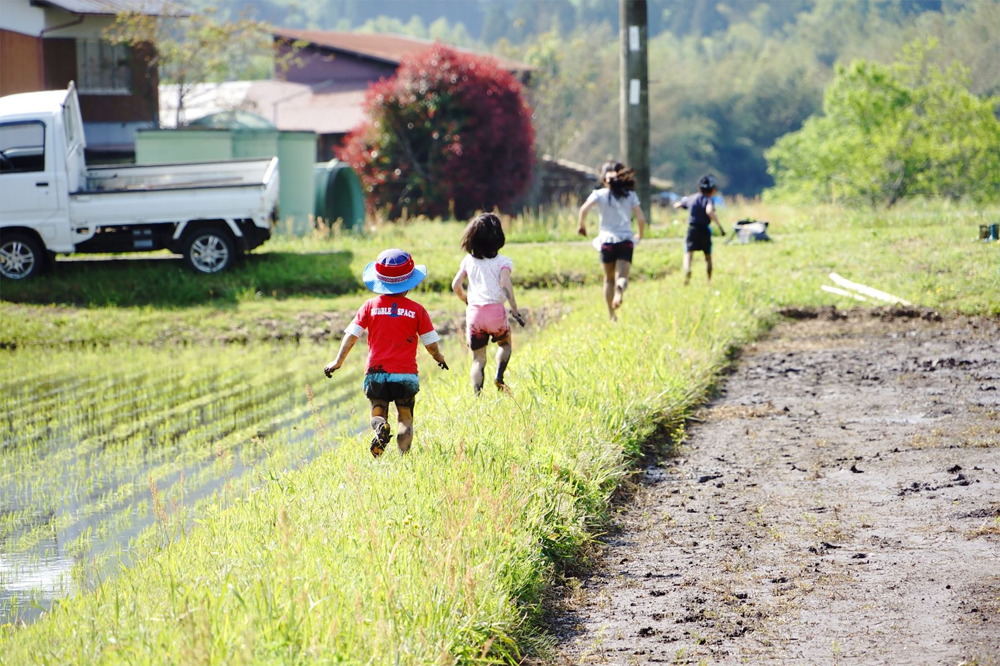
総人口 2006→2026
−37%
5,169人 → 約3,250人
16〜29歳 2006→2026
−53%
約640人 → 約300人（推計）
2036年の小学生（現状のまま）
約40人
1学年 6〜7人規模へ
それでも、あと「年5〜6世帯」で未来は変えられる。処方箋を見る →
Contents
8つの章で読む、美山の10年。
−51%
01 — Why構造を知るなぜ子どもは減り続ける？読む →
02 — Dataデータで見る美山20年でどう変わり、10年後どうなる？読む →
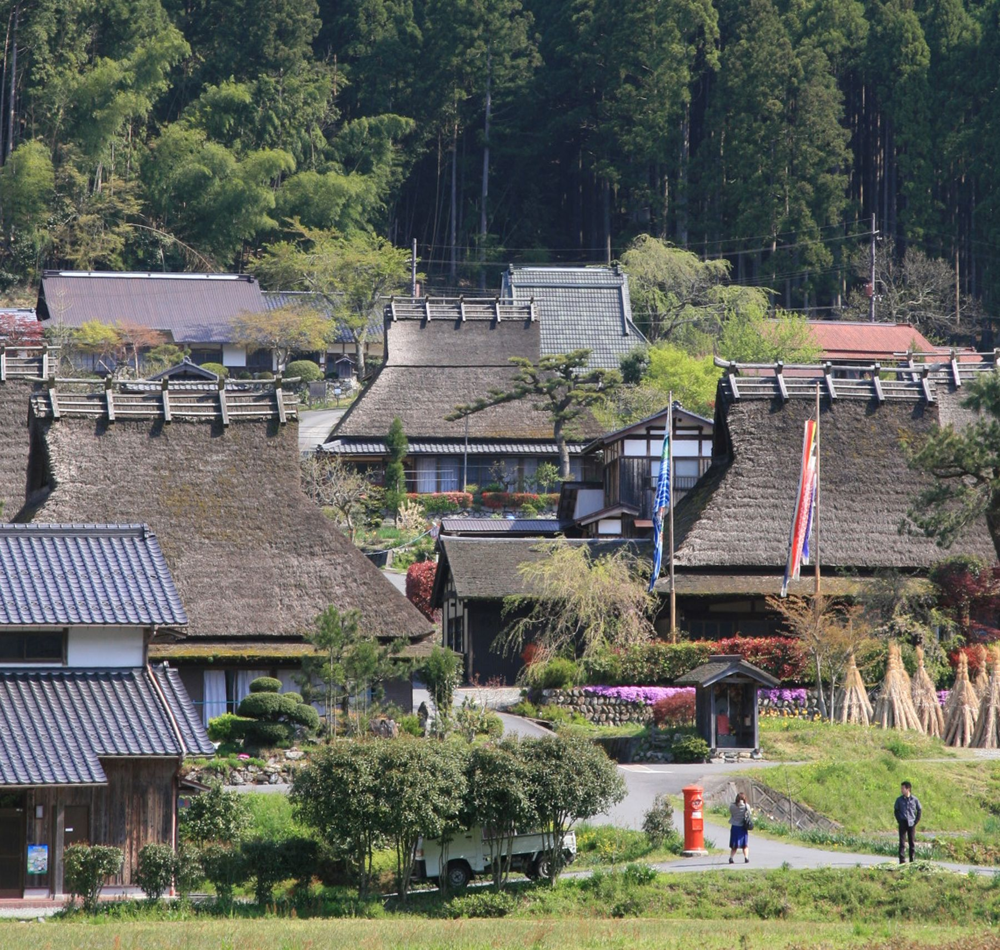
03 — Voices地域の声数字の裏で、暮らしに何が？読む →
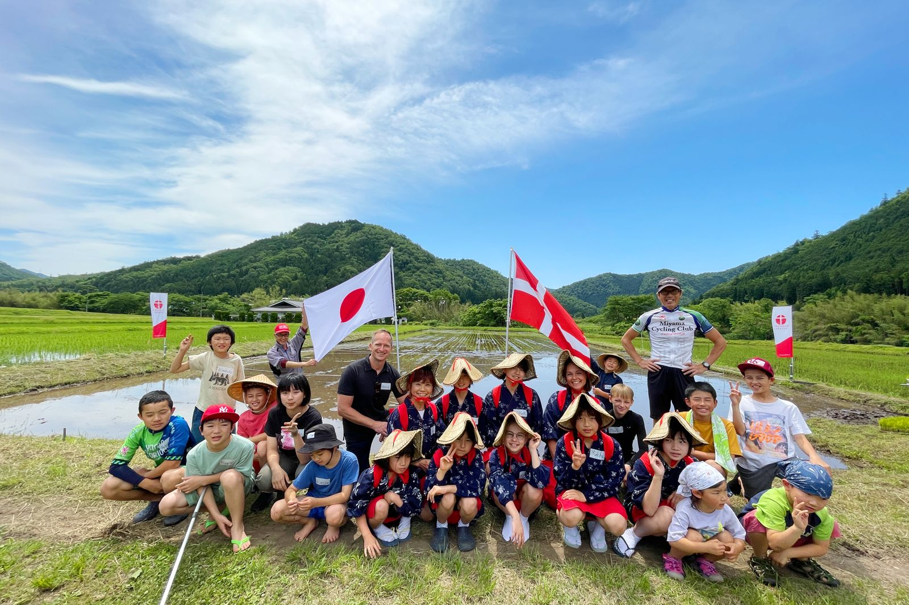
04 — How処方箋：教育疎開何をすれば学校が残る？読む →
89→184
05 — Evidence先行事例本当に人の流れは変えられる？読む →
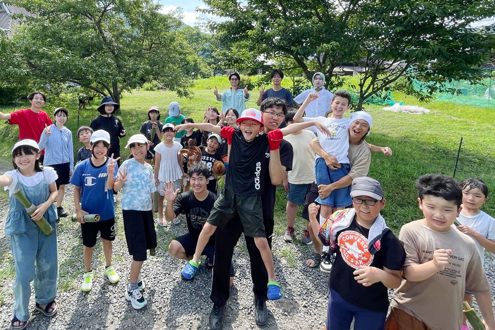
06 — Who担い手の生態系誰が、どう組んで実行する？読む →
5つの提言
07 — Proposal美山から中山間地へ他の地域でも使えるか？読む →
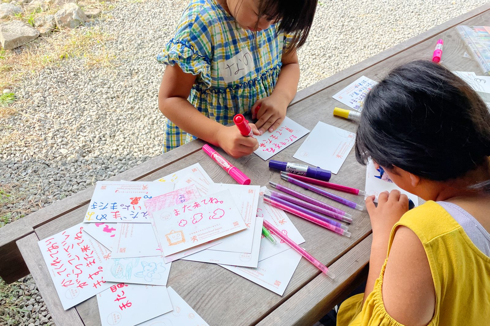
08 — Join参加する私にできることは？読む →
With Wasshoi
町の16〜29歳は約300人。
美山に通う大学生は約140人。
京都大学を含む7大学の学生がつくる一般社団法人わっしょいが、美山塾（学習支援）やすくすく（通年の体験教育）で子どもたちに伴走しています。失われた若者世代を、関係人口としての若者が補い始めています。
01
子どもが減るのは、
問い：なぜ子どもは減り続ける？
Chapter 01 — Why
子どもが減るのは、
「夫婦が産まない」からではない。
問い：なぜ子どもは減り続ける？
全国の出生数は半世紀で半分以下になりました。けれど、結婚した夫婦がもつ子どもの数はほとんど変わっていません。減ったのは「カップルの数」と、地方に残る若者そのものです。[1][2]
出生数 1970→2021
−58%
193.4万人 → 81.2万人
婚姻あたりの出生数
84%水準を維持
1.9 → 1.6
婚姻数 1970→2021
−51%
102.9万件 → 50.1万件
出典：天野馨南子「日本の少子化に関するデータ解説」ESRI政策フォーラム資料（2023）[2]。数値は同資料が厚生労働省「人口動態統計」から算出したもの。解釈は天野（2024）第1章[1]。
Mechanism 1
「出生率」は割り算。
地方の数字は高く見えやすい。
合計特殊出生率は、その地域にいる女性を分母に計算します。結婚していない若者が就職期に都市へ出ていくと、地方には子育て中の層が相対的に残り、率は高めに見えます。けれど分母そのものが減っているので、生まれる子どもの数は減り続けます。天野（2024）はこれを第3章「統計的誤解がもたらす地方少子化加速の罠」で論じ、地域の目標は出生率ではなく「子どもの人数」に置くべきだとしています。[1][3]
残った4人の出生「率」は高くても、生まれる「数」は小さい。率ではなく、若者の人数と流れを見る必要があります。
Mechanism 2
縮小再生産のスパイラル
若者世代（16〜29歳）が流出すると、10年後の「親になる世代」が消えます。美山はいま、高齢化による自然減が移住による社会増を大きく上回る段階にあります。天野（2024）第4章「地方から流出する結婚適齢期前人口」が示す構造です。[1][4]
若者の流出進学・就職期に都市へ
親世代の減少16〜29歳が20年で半減
出生数の減少0歳児は6人に
学校の縮小・再編統合、小中一貫へ
住む理由の減少子育て世帯がさらに離れる
だから、子育て支援「だけ」では止まらない。
いる子育て世帯への給付は大切です。でもそれは、若者が地域に残る・戻る理由にはなりません。若者が離れる最大の要因は「魅力的な仕事の不足」と「生活・教育インフラの格差」。教育を、外から人を呼ぶ“理由”に変える発想が必要です。
02
人口より速く、
問い：20年でどう変わり、10年後どうなる？
Chapter 02 — Data
人口より速く、
「親になる世代」が消えている。
問い：20年でどう変わり、10年後どうなる？
出典：南丹市（2021）『地域別まちづくり構想（美山地域編）』・住民基本台帳をもとにした一次資料[5]。16〜29歳は推計値。指数＝各年の人口÷2006年の人口×100。
若者世代の減り方は、総人口の約1.4倍の速さ。減少率 16〜29歳 53.1%（1−300/640）÷ 総人口 37.1%（1−3,250/5,169）＝ 1.43
2006年1月の合併で南丹市が誕生してから約20年。総人口は約37%（約1,900人）減りました。さらに深刻なのは、集落の維持と将来の出産を担う16〜29歳が、合併時の半分以下になったことです。
| 年 | 総人口 | 合併時比 | 16〜29歳 | 地域社会の変化 |
|---|---|---|---|---|
| 2006（H18） | 5,169人 | 100.0% | 約640人 | 4町合併で南丹市誕生。市人口の14.3% |
| 2010（H22） | 4,726人 | 91.4% | 約530人 | 高校卒業・就職期の都市流出が定着 |
| 2015（H27） | 4,197人 | 81.2% | 約430人 | 高齢化率40%超。旧5小学校の統合を決定 |
| 2020（R2） | 3,675人 | 71.1% | 約360人 | 単独・高齢夫婦世帯が増加 |
| 2026（R8） | 約3,250人 | 約62.9% | 約300人 | 高齢化率50%目前。草刈り・祭り・消防団の担い手が限界に |
Schools
5校を1校にしても、減少は止まらなかった。
1990年代半ば、旧5村（知井・平屋・宮島・鶴ヶ岡・大野）それぞれに小学校があり、町全体で小学生約315人・中学生約210人が学んでいました。2016年4月に5校を美山小学校1校に統合して複式学級を解消しましたが[7]、2025年5月には106人[6]、2026年には100人を割り込みました[5]。
小学生中学生教育移住 年5〜6世帯（小学生）実線＝実績・破線＝推計（移住なし）
実績：1995〜2016年は一次資料[5]、2025年は南丹市「園児・児童・生徒の状況（令和7年5月1日現在）」[6]、2026年の小学生は一次資料の速報値。推計：2025年の学年別人数と未就学児数からのコーホート進級法（計算方法は「データと出典」）[8]。
| 年 | 小学生 | 中学生 | 学校体制と地域への影響 |
|---|---|---|---|
| 1995頃 | 約315人（5校） | 約210人 | 旧5村ごとに小学校。1学年50〜70人規模。地域行事の核 |
| 2006 | 約220人（5校） | 約135人 | 合併時。周辺校で複式学級が常態化 |
| 2016 | 127人（1校） | 121人 | 美山小学校開校。単学級が復活する一方、周辺4地区から子どもの声が消える |
| 2025 | 106人（1校） | 75人 | 南丹市公式統計（5月1日現在）。学年別 小19・16・11・22・18・20／中23・29・23 |
| 2026 | 約98人（1校） | — | 100人割れ（一次資料）。1学年15人前後へ。中学校の部活動維持が困難に |
| 2036（推計） | 約41人 | 約34人 | 移住がない場合。小学校は1学年6〜7人に |
Already Born
すでに生まれている子どもの数が、未来を決めている。
美山地域の未就学児は、3〜5歳児が各16〜20人。それに対して2歳児は10人、1歳児と0歳児は6人です。この子どもたちが順番に入学するため、2029年度以降の入学者の減少はすでに確定しています。[8]
出典：令和7年度第1回南丹市総合教育会議 幼児教育・保育推進課資料（一次資料経由）[8]。3〜5歳は各年齢16〜20人（資料の幅）で表示。
他地域への吸収・廃校にはなりにくい
美山は約340㎢の広い山間地域で、統合後の美山小はスクールバス4路線で通学しています。[9]奥部（知井・芦生や鶴ヶ岡）から隣の日吉地域へ通うと片道1時間〜1時間半以上かかり、積雪時の安全面からも現実的ではありません。
小中一貫校（義務教育学校）への再編は避けにくい
推計では2036年に小学生約41人（1学年6〜7人）、中学生約34人。中学生はその後も減り続け、年7人の出生が続けば約21人（1学年7人）になります。小学校では2学年の合計が16人以下になると複式学級の基準に当たります[10]。こうなれば今の小・中学校の体制は維持できず、2030年代前半〜半ばに施設一体型の9年制への再編が避けられなくなります。
03
観光客の訪れる風景を、
問い：数字の裏で、暮らしに何が？
Chapter 03 — Voices
観光客の訪れる風景を、
守ってきたのは集落の暮らしです。
問い：数字の裏で、暮らしに何が？
かやぶきの里に人が集まる一方で、田の草刈り、祭り、消防団を担ってきた人たちは年々少なくなっています。この章では、数字の向こうにある暮らしと、学びを手渡してきた人たちの声を集めていきます。
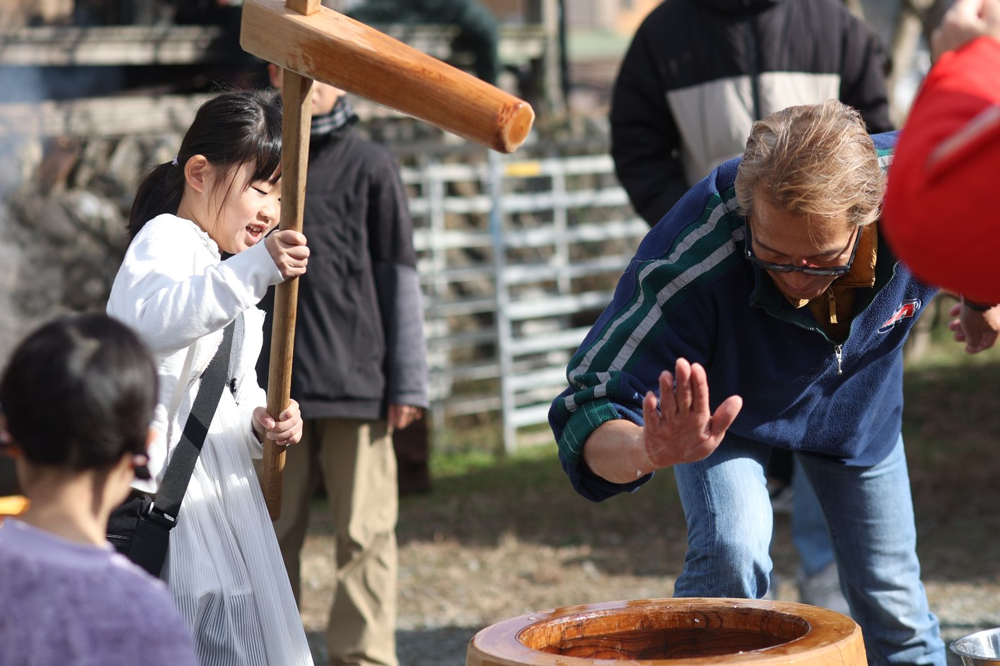
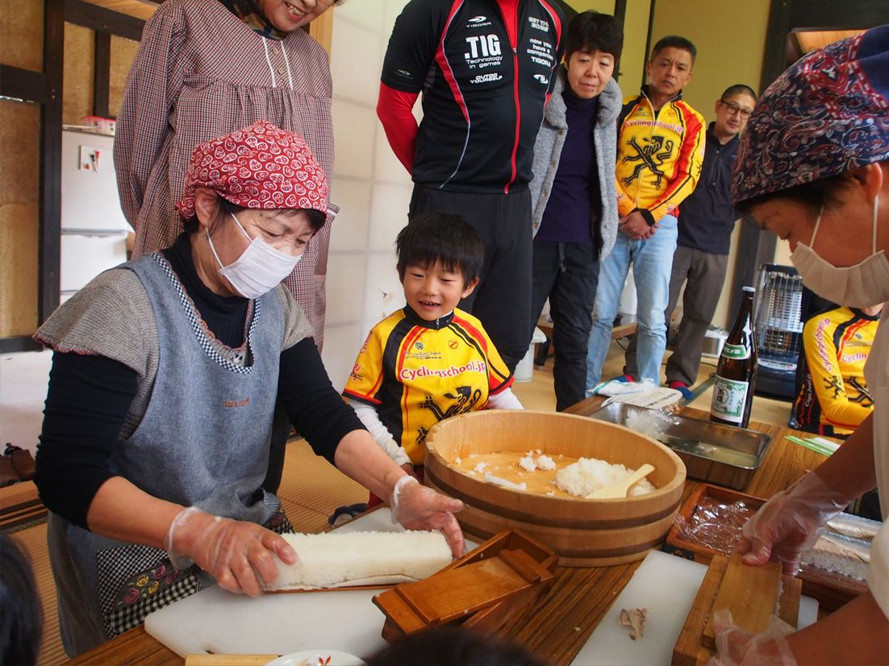
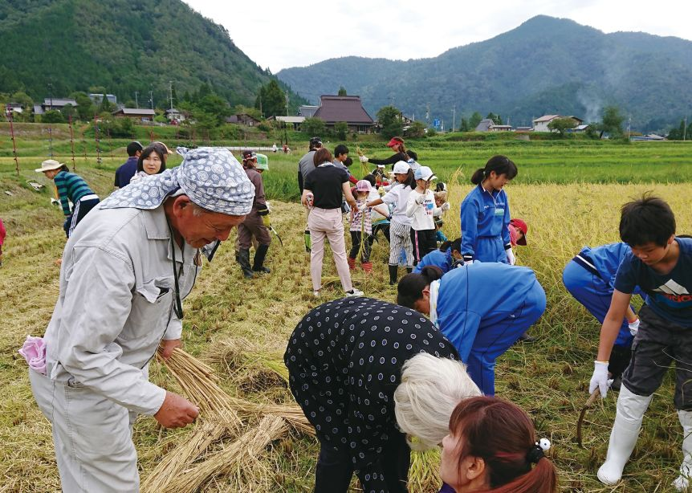
Five Villages
旧5村の声（インタビュー準備中）
各地区で、学校・祭り・消防団・農業に関わってきた方にお話を伺い、順次掲載します。
知井
掲載準備中
平屋
掲載準備中
宮島
掲載準備中
鶴ヶ岡
掲載準備中
大野
掲載準備中
インタビューでお聞きすること
- 子どものころ、地区の学校と行事はどんな姿だったか
- いま、担い手が足りないと感じる場面はどこか
- 外から来た家族や大学生と、どんな関わり方ならできそうか
- 10年後の地区に、何が残っていてほしいか
04
「子ども時代は、田舎で学ぶ」
問い：何をすれば学校が残る？
Chapter 04 — How
「子ども時代は、田舎で学ぶ」
── 教育疎開という処方箋
問い：何をすれば学校が残る？
地元の出生だけでは学校は残りません。必要なのは何百人もの移住ではなく、京阪神から車で1〜1.5時間という距離を生かした、毎年5〜6世帯の「教育を理由にした移住」です。NPO法人森の教育プロジェクトが掲げる「教育疎開」の構想[19]を、数字で確かめます。
Simulator
10年後の教室を、自分で動かしてみる
移住する世帯数と、地元の出生数を変えると、2036年の教室の姿が変わります。
教育移住の世帯数（毎年）
5世帯/年
移住する子ども：年 7.0 人地元の年間出生数
7人/年
標準推計は7人。現在の0歳児は6人。移住者は人口の 0.54%（1世帯3.5人で概算）。
田園回帰1%の目安（年約32人）の 54%。
田園回帰1%の目安（年約32人）の 54%。
将来の小学生（定常時）
84人
将来の中学生（定常時）
42人
1学年あたり
14.0人
小学生数の比較（2026年＝98人）
2026年 実数
98
現状のまま
約42
あなたの設定
84
学年ごとの教室（小1〜中3）
定常状態（移住が始まって9年後以降）の概算：1学年の人数＝地元出生数＋移住世帯数×1.4人、小学生＝1学年×6、中学生＝1学年×3。複式学級の判定は義務標準法の小学校基準（2学年の合計16人以下、1年生を含む場合は8人以下）による[10]。
Conditions
実装のための4つの条件
1毎年5〜6世帯の目標設定
京阪神（車1〜1.5時間圏）から、教育意識の高い家族を。子ども7〜8人/年で美山小の90人規模と単学級を維持。
2課外から、公教育そのものへ
デンマーク交流・英語・プログラミング・自転車教育を、放課後活動にとどめず特認校制度やカリキュラムと一体化。
3小中9年の定期借家バンク
永住ではなく「9年間」の移住を望む家族へ。すぐ入居できる改修済み空き家を毎年5〜6戸、安定して供給。
4リモートワークの環境
都市の企業に勤めたまま美山で子育てできる通信環境とコワーキング拠点で、移住の経済的なハードルを下げる。
美山にしかない学び ── 課外から、公教育の柱へ
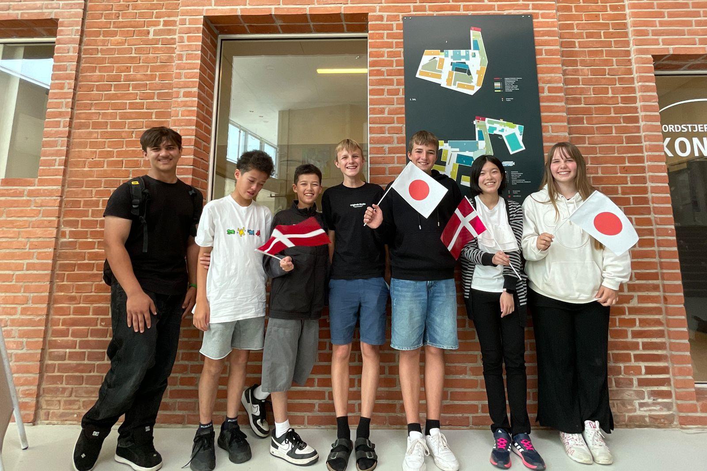
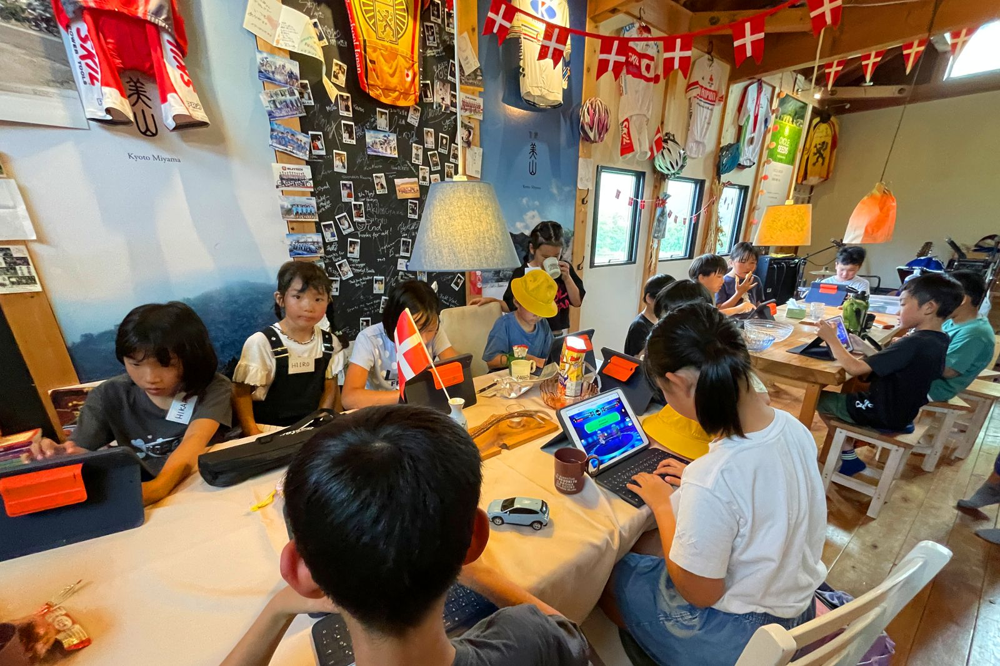
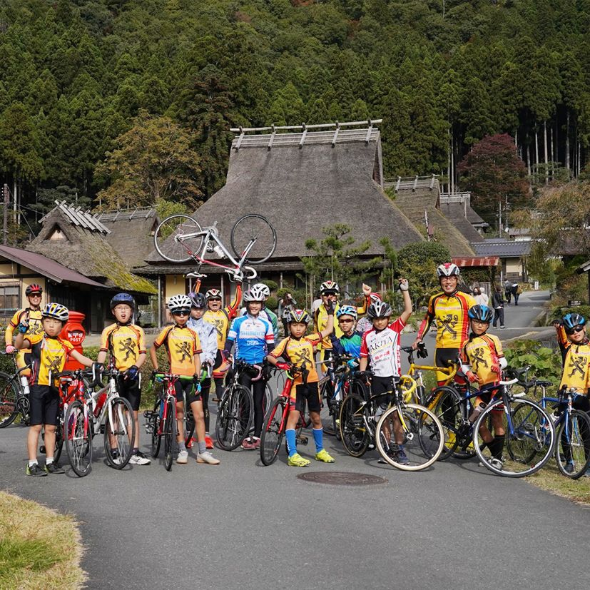
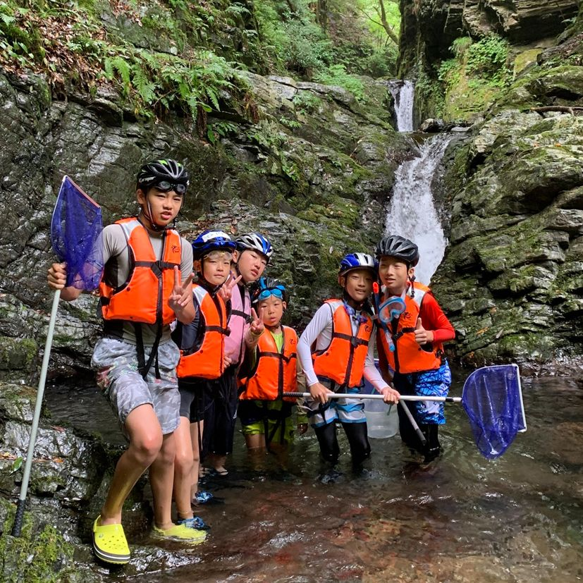
05
学校を軸に、人の流れを
問い：本当に人の流れは変えられる？
Chapter 05 — Evidence
学校を軸に、人の流れを
変えた地域はすでにある。
問い：本当に人の流れは変えられる？
成功事例に共通する条件と、美山にすでにある芽
| 共通する条件 | 先行事例 | 美山にすでにあるもの |
|---|---|---|
| 学校を「選ばれる理由」に | 隠岐島前高校の魅力化 | デンマーク交流、自転車教育、プログラミング |
| 受け入れのコーディネーター | 島前高校の教育魅力化コーディネーター | NPO法人 森の教育プロジェクト |
| お試しの入口 | デュアルスクール（区域外就学） | 体験・短期滞在プログラム（構想段階） |
| 若い担い手 | 地域みらい留学の高校生 | 一般社団法人わっしょい（7大学・約140名） |
| 住まい | 山村留学の住宅確保 | 空き家（9年定期借家の仕組みは今後） |
06
子どもを真ん中に、
問い：誰が、どう組んで実行する？
Chapter 06 — Who
子どもを真ん中に、
町・大学・NPOがつながる。
問い：誰が、どう組んで実行する？
Wasshoi
町の16〜29歳は約300人。
美山に通う大学生は約140人。
失われた若者世代を、関係人口としての大学生が補い始めています。移住を考える家族にとって「大学生が学びに伴走する町」であることは、都市にはない強い理由になります。
わっしょい会員数は2026年8月時点。町内の若者数は推計値。
7大学
11学部から参加
46回
2025年度 町内での活動
34回
2025年度 すくすく（平均約20名）
727名
2026年度 延べ参加（7/5時点）
110名
MIYAMA EXPO 第3回
美山塾美山の小中学生に大学生が学習支援。教育移住を考える家族への強い安心材料に。
美山「すくすく」月2回程度の通年体験教育。ものづくり、自然観察、交流。
MIYAMA EXPO留学生と美山の子どもたちがつくる国際交流イベント。
カヤゴヤ学生の手で建てる茅葺きのトレーラーハウス。動く体験教室・交流拠点。
農業・農業DX米や枝豆を種から育て、田んぼにセンサーとカメラを設置。
地域行事への参加美山やまざと市、美山ロードなどの運営を手伝う。
出典：一般社団法人わっしょい公式サイト[18]
協働の見取り図
NPO 森の教育プロジェクト構想・教育コンテンツ・国際交流
わっしょい学習支援・体験教育・若い担い手
美山の
子どもたち
子どもたち
美山小・中学校特認校・区域外就学・カリキュラム
町民・集落空き家・見守り・伝統の継承
南丹市・京都府制度・住まい・通信インフラ
07
美山から、中山間地への
問い：他の地域でも使えるか？
Chapter 07 — Proposal
美山から、中山間地への
5つの提言
問い：他の地域でも使えるか？
小規模特認校や区域外就学（デュアルスクール型）を活用し、町外の子どもが通える制度の入口をつくる。まずは短期の「お試し就学」から始め、9年間の定着へつなげる。
小中9年の定期借家空き家バンクと改修支援。貸し手の不安を減らす管理・仲介の仕組みとセットで、毎年5〜6戸を安定して供給する。
わっしょいの美山塾・すくすくを「放課後の学び保証」として位置づけ、拠点・交通・保険を地域が支える。学生の関わりを単発の活動から継続の仕組みへ。
通信環境とコワーキング拠点を整え、都市の企業と二地域勤務の協定をつくる。共働きの保護者が仕事を辞めずに移れることが、教育移住の前提になる。
16〜29歳・30代女性・年少人口の社会増減と、教育移住の世帯数を毎年公開する。他の地域が自分の町の数字を入れて使えるKPIテンプレートとして配布する。
KPI Template
学校存続KPIテンプレート（美山版）
「率」ではなく「人数」と「流れ」で、毎年の進み具合を確かめます。他の地域は右の列を自分の町の数字に置き換えて使えます。
| 指標 | 美山の現状 | 目標の考え方 | 出典・更新 |
|---|---|---|---|
| 教育移住の世帯数 | — | 年5〜6世帯 | NPO・市の受入記録（毎年） |
| 小学校の児童数 | 約98人 | 90人規模を維持 | 学校基本調査（毎年5月） |
| 0〜5歳の人数 | 0歳6人・1歳6人 | 各学年10人以上 | 住民基本台帳 |
| 16〜29歳の人数 | 約300人 | 減少の幅を縮める | 住民基本台帳 |
| 人口に対する定住増 | — | 人口の0.6〜1%/年 | 転入・転出の記録 |
| 9年定期借家の供給戸数 | — | 年5〜6戸 | 空き家バンク |
| 大学生の延べ関わり | 727名（2026年7月時点） | 継続・拡大 | わっしょい活動記録 |
「—」は現時点で公表データがないため、記録の仕組みづくりから始める項目です。
08
「また来てね。」
問い：私にできることは？
Chapter 08 — Join
「また来てね。」
子どもたちの言葉に、町として応える。
問い：私にできることは？
ここに挙げたアクションは、現時点では「構想」です。
空き家の9年貸出、サポーター登録、体験・移住相談などの仕組みは、まだ実際には動いていません。この提言を町の皆さんと具体的にしていくことで、課題の解決につながる可能性がある、という想定として示しています。関心をお持ちの方は、まずはお気軽にお問い合わせください。
学生・企業・行政の方へ
わっしょい・対話会に参加
美山塾やすくすくへの参加、企業連携、他地域での応用。議論の場を一緒につくりましょう。
わっしょいのサイトへ →対話会のお問い合わせ：mori-info@edu-project.jpData & Evidence
データと出典
このサイトの主張が、どの根拠に基づき、どう計算されているかをすべて公開します。数字には本文中の［番号］から、ここへ移動できます。
Map of Evidence
主張と根拠の対応
公式統計行政が公表した数値 研究・書籍専門家の分析 本サイト算出公開データからの計算
| このサイトの主張 | 根拠 | 種類 |
|---|---|---|
| 少子化の主因は夫婦の子ども数ではなく、婚姻数の減少 | 出生数58%減に対し、婚姻あたり出生数は84%水準を維持 [1][2] | 研究・書籍 |
| 地方の出生率は高めに見えやすく、目標にすべきは子どもの人数 | 未婚の若年女性の流出で分母が減る統計的な性質 [1][3] | 研究・書籍 |
| 若者の流出が「親になる世代」を消し、縮小再生産を招く | 20代の流出と地域の人口再生産の関係 [1][4] | 研究・書籍 |
| 美山の16〜29歳は20年で約53%減、総人口の約1.4倍の速さ | 640人→300人、5,169人→約3,250人 [5] | 公式統計本サイト算出 |
| 美山小は2025年106人、2026年に100人割れ | 南丹市公式統計（2025年5月1日）[6]、2026年は速報値 [5] | 公式統計 |
| 移住がなければ2036年に小学生約41人・中学生約34人 | コーホート進級法による推計 [6][8] | 本サイト算出 |
| 小中一貫校への再編は避けにくいが、他地域への吸収は現実的でない | 校区340㎢・スクールバス4路線 [9]、複式学級の法定基準 [10] | 公式統計 |
| 年5〜6世帯の教育移住で小学生約90人を維持できる | 推計への移住の加算 [8]、教育疎開の構想 [19] | 本サイト算出 |
| その規模（人口の約0.6%/年）は現実的な範囲 | 田園回帰1%戦略 [11][12] | 研究・書籍 |
| 学校を軸に人の流れを変えた地域がある | 隠岐島前高校 [13]、丹波山村 [14]、デュアルスクール [15][16]、地域みらい留学 [17] | 公式統計報道・団体発表 |
| 大学生が若い担い手として関わっている | わっしょいの活動実績 [18] | 団体発表 |
Theory
理論的な根拠
① 地方の出生率が高めに見える「統計のトリック」
合計特殊出生率 ＝ Σ（母の年齢別出生数 ÷ 同じ年齢の女性人口）15〜49歳の各年齢について足し合わせる。分母には未婚の女性も含まれる。
日本では婚外子が約2%と少ないため、出生のほぼすべてが結婚した夫婦から生まれます[2]。未婚の若い女性が進学や就職で都市へ移ると、地方では分母が小さくなり、出生率は高めに出ます。しかし生まれる子どもの数は、女性の人数そのものが減った分だけ減ります。天野（2024）第3章はこの点を「統計的誤解がもたらす地方少子化加速の罠」として論じ、地域の目標は出生率ではなく子どもの人数に置くべきだとしています[1][3]。
Method
推計の方法
児童生徒数は、市町村の学校再編計画でも一般に使われる「コーホート進級法」で計算しました。1年ごとに全員が1学年ずつ進級し、新しく小学1年生が入ってくる、という単純な仕組みです。
① 翌年度の n 年生 ＝ 今年度の（n−1）年生転入・転出、山村留学などの出入りはないものとする。
② 小学生 ＝ 小1〜小6の合計 中学生 ＝ 中1〜中3の合計基準：2025年5月1日の学年別人数[6]
③ 小1の入学者：2026年度＝5歳児、2027年度＝4歳児、2028年度＝3歳児（各16〜20人、中央値18人）、2029年度＝2歳児10人、2030年度＝1歳児6人、2031年度＝0歳児6人、2032年度以降＝年7人未就学児数は南丹市総合教育会議資料（一次資料経由）[8]。年7人は一次資料の標準推計の仮定。
④ 教育疎開シナリオ：2027年度から毎年、移住の子ども8人（5〜6世帯×約1.4人）を小1に加える長期的には1学年15人（7＋8）→ 小学生約90人・中学生約45人
⑤ 人口比：5.5世帯 × 3.5人 ÷ 3,250人 ≒ 0.59% 1%ライン：3,250人 × 1% ≒ 32人1世帯3.5人は概算。
⑥ 減少スピードの比：(1−300/640) ÷ (1−3,250/5,169) ＝ 53.1% ÷ 37.1% ≒ 1.4316〜29歳と総人口の2006→2026年の減少率の比[5]
| 年度 | 小学生（中央値） | 幅（3〜5歳 16〜20人） | 中学生（中央値） | 幅 | 教育疎開シナリオの小学生 |
|---|---|---|---|---|---|
| 2026 | 104 | 102〜106 | 72 | 72 | 104 |
| 2027 | 104 | 100〜108 | 61 | 61 | 112 |
| 2028 | 100 | 94〜106 | 60 | 60 | 116 |
| 2029 | 99 | 93〜105 | 51 | 51 | 123 |
| 2030 | 89 | 83〜95 | 49 | 49 | 121 |
| 2031 | 76 | 70〜82 | 46 | 46 | 116 |
| 2032 | 65 | 61〜69 | 53 | 51〜55 | 113 |
| 2033 | 54 | 52〜56 | 55 | 51〜59 | 102 |
| 2034 | 43 | 43 | 54 | 48〜60 | 91 |
| 2035 | 40 | 40 | 46 | 42〜50 | 88 |
| 2036 | 41 | 41 | 34 | 32〜36 | 89 |
推計の限界と読み方
転出入を入れていないため、実際の動きとはずれます。たとえば2026年の推計は104人ですが、速報値は98人で、すでに推計より少なくなっています[5]。実際の減少は推計より早い可能性があります。また2031年度以降の0歳児・出生数の仮定（6人・年7人）が変われば、2032年度以降の値も変わります。
一次資料からの修正点
2036年の小学生は一次資料（約40人）と本推計（約41人）がほぼ一致しました。一方、中学生は一次資料の約23人に対し、本推計は約34人です。一次資料は「年7人×3学年」をすでに生まれている学年にも当てはめていたため、すでに生まれている2〜4歳の実数（10人・各16〜20人）に置き換えて修正しました。中学生は2036年以降も減り続け、年7人が続けば約21人になります。
Legal Standard
複式学級の法定基準
「公立義務教育諸学校の学級編制及び教職員定数の標準に関する法律」第3条による1学級の人数の標準です[10]。シミュレーターの判定はこの小学校の基準を使っています。
| 区分 | 小学校 | 中学校 |
|---|---|---|
| 同じ学年で編制する学級 | 40人（1年生は35人） | 40人 |
| 2つの学年で編制する学級（複式学級） | 16人（1年生を含む場合は8人） | 8人 |
2学年の合計がこの人数以下になると、2学年で1つの学級を編制する基準に当たります。実際の学級編制は都道府県の基準によって異なる場合があります。
References
参考文献・資料
- [1]天野馨南子（2024）『まちがいだらけの少子化対策：激減する婚姻数になぜ向き合わないのか』金融財政事情研究会、240頁、ISBN 978-4-322-14446-8第1章「少子化が進む本当の理由」、第3章「統計的誤解がもたらす地方少子化加速の罠」、第4章「地方から流出する結婚適齢期前人口」、第6章「『子育て支援』最優先国家が苦しめるのは誰なのか」を理論的根拠として参照https://www.kinokuniya.co.jp/f/dsg-01-9784322144468
- [2]天野馨南子（2023）「日本の少子化に関するデータ解説」内閣府経済社会総合研究所 ESRI政策フォーラム資料（2023年4月26日）出生数（1970→2021年）58%減、婚姻あたり出生数1.9→1.6、婚姻数51%減の出典https://www.esri.cao.go.jp/jp/esri/workshop/forum/230426/pdf/230426_siryo03.pdf
- [3]天野馨南子「データで見る『エリア出生率比較』政策の落とし穴：エリアKGI/KPIは『出生率』ではなく『子ども人口実数』」ニッセイ基礎研究所 基礎研レポート地域の目標を出生率ではなく子どもの人数に置くべきとする根拠（提言05の根拠）https://www.nli-research.co.jp/files/topics/61736_ext_18_0.pdf?site=nli
- [4]天野馨南子（2024）「2023年20代人口流出率にみる『都道府県人口減の未来図』」ニッセイ基礎研究所 NLI Research Institute REPORT 2024年6月号20代人口の流出が地域の人口再生産の機能を失わせるという指摘（縮小再生産の根拠）https://www.nli-research.co.jp/files/topics/78721_ext_18_0.pdf?site=nli
- [5]Webサイト企画 一次資料「美山町の『静かな危機』と教育を起点とした再生シナリオ」（2026）総人口・16〜29歳の推移（南丹市『地域別まちづくり構想（美山地域編）』（2021）および住民基本台帳をもとに作成）、1995〜2016年の児童生徒数、2026年の児童数（速報値）の出典。元データでの検証は下記「今後確認するデータ」を参照
- [6]南丹市「園児・児童・生徒の状況（令和7年5月1日現在）」美山小学校 106人（学年別19・16・11・22・18・20）、美山中学校 75人（23・29・23）。推計の基準データhttps://www.city.nantan.kyoto.jp/www/life/112/018/000/70987/1012148_1_501_42.pdf
- [7]南丹市立美山小学校「学校の概要」知井・平屋・宮島・鶴ヶ岡・大野の5小学校を統合し、2016年（平成28年）4月1日に美山小学校が開校https://www.kyoto-be.ne.jp/miyama-es/cms/?p=25
- [8]本サイトによる推計（コーホート進級法）＋ 南丹市「令和7年度第1回 総合教育会議」幼児教育・保育推進課資料（一次資料経由）2026〜2036年の児童生徒数推計。計算方法と全年度の値は本ページ「推計の方法」に掲載
- [9]文部科学省「統合による魅力ある学校づくりの取組モデル〈京都府南丹市〉」美山小学校の校区面積340.47㎢（南丹市の面積の半分強）、スクールバス4路線https://www.mext.go.jp/content/20200228-mxt_syoto02-000004938_10.pdf
- [10]公立義務教育諸学校の学級編制及び教職員定数の標準に関する法律（義務標準法）第3条複式学級の基準：小学校は2学年で16人（1年生を含む場合8人）、中学校は2学年で8人https://hourei.net/law/333AC0000000116
- [11]藤山浩（2015）『田園回帰1%戦略：地元に人と仕事を取り戻す』農山漁村文化協会 ／ 同「『1%戦略』で地域ごとに人口安定化の目標設定」総務省資料毎年、人口の1%程度の定住増加で人口と子どもの数を安定させられるという分析https://www.soumu.go.jp/main_content/000666550.pdf
- [12]竹内亮（2016）「シリーズ田園回帰（1）藤山浩著『田園回帰1%戦略』」『財政と公共政策』第60号、京都大学1%戦略の要旨（地域人口と14歳以下人口を8割以上で安定させる定住増の目安、想定する移住者像）https://repository.kulib.kyoto-u.ac.jp/dspace/bitstream/2433/217547/1/pfpp_060_41.pdf
- [13]岩本悠「地域・社会とつながる魅力ある高校づくり」熊本県資料隠岐島前高校の生徒数 89人→184人（2008→2017年）https://www.pref.kumamoto.jp/uploaded/life/232813_661203_misc.pdf
- [14]リセマム「丹波山村 山村留学説明会」（2026年11月）2026年11月1日現在、小学生19人・中学生7人のうち半数以上が山村留学で移住https://resemom.jp/release/prtimes/20261105/226335.html
- [15]徳島県教育委員会・株式会社あわえ「デュアルスクール」資料（国土交通省 全国二地域居住等促進協議会）区域外就学制度を使い、住民票を移さずに都市と地方の学校を行き来できる仕組みhttps://www.mlit.go.jp/2chiiki/files/dual_schol.pdf
- [16]リセマム「国土交通省『特定居住支援法人モデル構築実証調査』に採択」（2026年10月）美波町・高畠町・森町・株式会社あわえによる多地域就学制度の実証https://resemom.jp/release/prtimes/20261016/220917.html
- [17]一般財団法人地域・教育魅力化プラットフォーム「地域みらい留学 1学年の入学者数が初の1000人超」（2026年）2026年度の都道府県外からの入学者1,127人、参画校約190校https://prtimes.jp/main/html/rd/p/000000068.000035136.html
- [18]一般社団法人わっしょい 公式サイト会員約140名（7大学・11学部、2026年8月時点）、2025年度の町内活動46回、すくすく34回、2026年度延べ参加727名（7月5日時点）、MIYAMA EXPO第3回110名https://wasshoi-ku.com/
- [19]特定非営利活動法人 森の教育プロジェクト（2025）『2025森の教育プロジェクトパンフレット』／公式サイト「教育疎開（子ども時代は、田舎で学ぶ）」の構想https://edu-project.jp/
To Verify
今後、元データで確認する項目
説得力をさらに高めるため、次のデータは行政の元資料で確かめ、確認でき次第この表示を更新します。
- 美山地域の総人口と16〜29歳人口（2006〜2026年）：南丹市の住民基本台帳 地域別・年齢別人口
- 未就学児の年齢別人数：令和7年度第1回 南丹市総合教育会議の配布資料
- 2026年5月1日現在の学年別児童生徒数：南丹市「園児・児童・生徒の状況」令和8年版
- 1995年・2006年の児童生徒数：学校基本調査（学校別）または南丹市教育委員会の記録
更新履歴
- 2026年11月17日 出典・計算方法を公開。中学生の推計をコーホート進級法で再計算（2036年 約23人 → 約34人）。南丹市公式統計（2025年5月1日）を追加。
- 2026年11月 公開準備版